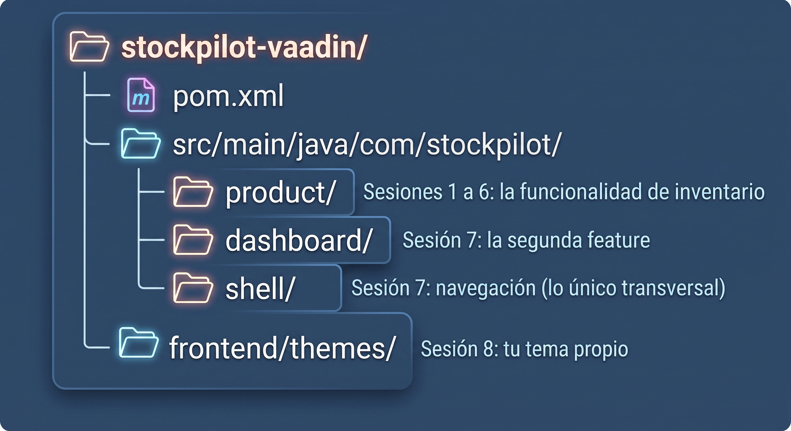

Sesión 0: El problema, por qué Vaadin y el setup¶
Lo que vas a lograr: entender a fondo el problema que resuelve Vaadin, por qué lo elegimos en vez de separar frontend y backend, y dejar tu entorno listo para la Sesión 1.
Parte 1: El problema, en una historia¶
Un equipo de backend necesita un panel interno de inventario. Nada
glamoroso: una tabla de productos, un formulario para editarlos, un botón
para eliminar. Como todo el mundo hoy separa frontend de backend, arrancan
así: un servicio Spring Boot con un ProductController que expone
/api/products, y un proyecto React aparte que lo consume.
Tres semanas después, el inventario "simple" tiene:
- Un DTO por cada lado. El
Productde Java, unProducten TypeScript, y un mapper (a veces manual, a veces generado) para que no se desincronicen. Cada campo nuevo se agrega dos veces. - Validación por partida doble. "El precio debe ser mayor a cero" vive en el backend, con Bean Validation, porque no se puede confiar en el cliente. Y vive otra vez en el frontend, con una librería de formularios de React, porque nadie quiere esperar un roundtrip HTTP para enterarse de un error de tipeo.
- Una superficie de ataque más ancha. Ahora hay CORS que configurar, un token que viajar entre dos servicios, y una API pública (aunque sea "interna") que alguien tiene que versionar y documentar.
- Un segundo pipeline de build, con su
node_modules, su bundler, sus actualizaciones de dependencias, para una pantalla que en el fondo es una tabla y un formulario.
Nada de esto es difícil por separado. El problema es que se paga todo junto, siempre, para cualquier herramienta interna, sin importar cuán simple sea. Y en un equipo de backend sin ingenieros de frontend dedicados, ese costo compite directamente con el tiempo que podrían invertir en el negocio.
Parte 2: Por qué Vaadin y no otra opción¶
Antes de elegir, miremos las alternativas reales para este problema:
- Frontend separado (React/Angular/Vue) + API REST: la opción por defecto de la industria. Excelente cuando de verdad hay múltiples clientes (web, móvil) consumiendo la misma API, o cuando hay un equipo de frontend dedicado. Para una herramienta interna de un solo equipo, es pagar la complejidad de una arquitectura multi-cliente sin tener múltiples clientes.
- Server-side rendering con plantillas (Thymeleaf, JSP): evita el segundo lenguaje, pero te devuelve a escribir HTML a mano, y cualquier interacción rica (una tabla que se filtra sin recargar la página, un formulario que valida mientras escribes) requiere JavaScript de todos modos, aunque sea poco.
- Vaadin Flow: los componentes de UI son objetos Java. Vaadin mantiene una conexión persistente con el navegador y traduce cada cambio de estado del servidor en actualizaciones del DOM. Nunca escribes HTML, CSS obligatorio, ni JavaScript, y sin embargo tienes interacciones ricas (Grid ordenable, formularios reactivos) de fábrica.
Elegimos Vaadin por tres razones concretas:
- Un solo lenguaje, un solo repo. El equipo que ya sabe Java escribe la UI en Java. No hay que aprender React ni TypeScript para construir una herramienta interna.
- Cero contrato que mantener sincronizado. No hay DTOs duplicados ni generador de clientes: la vista y el servicio comparten literalmente las mismas clases de dominio.
- La validación se escribe una sola vez, del lado del servidor, con Binder, y aun así se siente instantánea para el usuario, porque el servidor está a milisegundos, no a un despliegue de distancia.
| Frontend separado + REST | Vaadin Flow | |
|---|---|---|
| Lenguajes en el equipo | Dos | Uno |
| Dónde vive el estado de la UI | En el navegador | En el servidor |
| Contrato entre capas | API REST + DTOs a sincronizar | No existe: mismas clases |
| Validación | Duplicada (cliente y servidor) | Una sola vez (Binder) |
| Build de JavaScript | Sí | No |
| SEO / tráfico público masivo | Es su fuerte | No es su caso de uso |
Vaadin no es la respuesta para todo
Si estás construyendo algo público que necesita SEO, contenido cacheado en un CDN para millones de visitas, o ya tienes un equipo de frontend sirviendo varios clientes (web, iOS, Android) contra la misma API, la separación frontend/backend sigue siendo la decisión correcta. Vaadin brilla en el otro extremo: herramientas internas, backoffices, dashboards: el tipo de software que un equipo de backend construye todo el tiempo, y donde separar en dos repos es pagar una complejidad que nadie afuera de la empresa va a agradecer. StockPilot, lo que vamos a construir, es exactamente ese caso.
Parte 3: Los conceptos en dos minutos¶
Dos ideas van a aparecer una y otra vez en esta guía:
- Signals: el sistema de estado reactivo de Vaadin. En vez de escuchar eventos y actualizar la UI a mano, declaras la relación entre un dato y la UI una sola vez, y el framework mantiene todo sincronizado. Lo vas a ver de cerca en la Sesión 2, y en su forma más potente (como KPIs de negocio derivados) en la Sesión 3.
- Package-by-feature: la forma en que vamos a organizar el código. En
vez de separar por capa técnica (
backend,ui), separamos por funcionalidad de negocio (product,dashboard). La Sesión 1 dedica su primera parte entera a explicar por qué.
Qué es Vaadin Flow, en una frase
Un framework de Java (o Kotlin) donde cada componente de UI (botón, campo de texto, tabla) es un objeto del lado del servidor, y el framework se encarga de pintar y actualizar el navegador sin que escribas una línea de HTML o JavaScript.
Parte 4: Lo que necesitas instalar¶
Java 25¶
¿No tienes Java 25 todavía?
Vaadin 25 funciona con Java 21 en adelante. Si tu organización todavía
no migró a 25, puedes seguir toda esta guía con Java 21 sin cambiar nada
del código: solo ajusta java.version en el pom.xml cuando lo
generemos en la Sesión 1.
Maven¶
La mayoría de los IDEs lo traen integrado. Para verificar que tienes uno disponible desde la terminal:
IntelliJ IDEA (o tu IDE preferido)¶
La Community Edition alcanza: jetbrains.com/idea.
El plugin de Vaadin, para hot reload
Instala el plugin oficial de Vaadin desde el marketplace de tu IDE. Te permite correr la app en modo "debug con hot swap agent": cada vez que guardas un cambio en Java, se refleja en el navegador sin reiniciar el servidor. No es obligatorio para seguir la guía, pero acorta muchísimo el ciclo de prueba-y-error de cada sesión.
Visual Studio Code (si vas a usarlo en vez de un IDE de JetBrains)¶
Si tu equipo usa VS Code, instala estos dos packs de extensiones desde el Marketplace antes de la Sesión 1:
- Extension Pack for Java (Microsoft): soporte del lenguaje, debugger y ejecución de proyectos Maven/Gradle.
- Spring Boot Extension Pack (VMware): autocompletado de
application.properties, navegación de beans y ejecución de aplicaciones Spring Boot.
Los dos packs son necesarios, no alcanza con uno solo
El pack de Java te da el soporte base del lenguaje; el de Spring Boot añade todo lo específico del framework (beans, endpoints, propiedades). Sin el segundo, VS Code no te resalta ni autocompleta nada de Spring.
Configurar la ruta del JDK a mano en VS Code¶
A veces VS Code no detecta solo el JDK 25 recién instalado, sobre todo si tienes varias versiones de Java conviviendo en tu equipo (por ejemplo, instaladas con SDKMAN). Si te pasa esto, puedes indicarle la ruta exacta a mano.
Paso 1: abre settings.json
Abre la paleta de comandos (Cmd + Shift + P en macOS, Ctrl + Shift + P
en Windows), escribe Preferences: Open User Settings (JSON) (o
Preferencias: Abrir configuración del usuario (JSON) si tu editor está
en español) y selecciona esa opción.
Paso 2: identifica la ruta de instalación de tu Java 25
Paso 3: agrega la configuración al JSON
Busca la propiedad java.configuration.runtimes en tu settings.json.
Si no existe, agrégala antes de la última llave de cierre }.
En el JSON de Windows, usa doble barra invertida \\
Una sola barra invertida \ no sirve, porque en JSON es un carácter
de escape. C:\\Program Files\\Java\\jdk-25 es lo correcto.
Paso 4: limpia el caché de Java (este paso no es opcional)
Guarda settings.json, abre de nuevo la paleta de comandos, escribe
Java: Clean Workspace y presiona Enter. Confirma con el botón
Restart and clean que aparece en la esquina inferior derecha. Sin
este paso, VS Code sigue usando la configuración de Java que tenía en
memoria, aunque ya hayas guardado la ruta nueva.
Cuando VS Code termine de reiniciar, ya puedes correr y debuggear el proyecto directamente desde ahí: con el Spring Boot Extension Pack instalado, vas a tener un panel Spring Boot Dashboard con tu aplicación listada, y la inicias con el ícono de play, sin pasar por la terminal.
Un navegador moderno¶
Cualquiera sirve. Vaadin no requiere ninguna extensión ni configuración especial del lado del cliente.
Parte 5: La carpeta del repo¶
Al final de esta guía vas a tener un único proyecto Maven, generado en la Sesión 1, con esta forma:

Dónde van tus capturas
Si vas a documentar tu propio avance con imágenes, te sugiero una
carpeta docs/images/ dentro del repo, con un nombre por sesión:
sesion1-grid-vacio.png, sesion3-kpis-en-vivo.png, y así. Esta guía
deja el lugar marcado en cada sesión con `![...]" para que sepas
exactamente dónde va cada una.
Cuando estés listo, sigue a la Sesión 1.